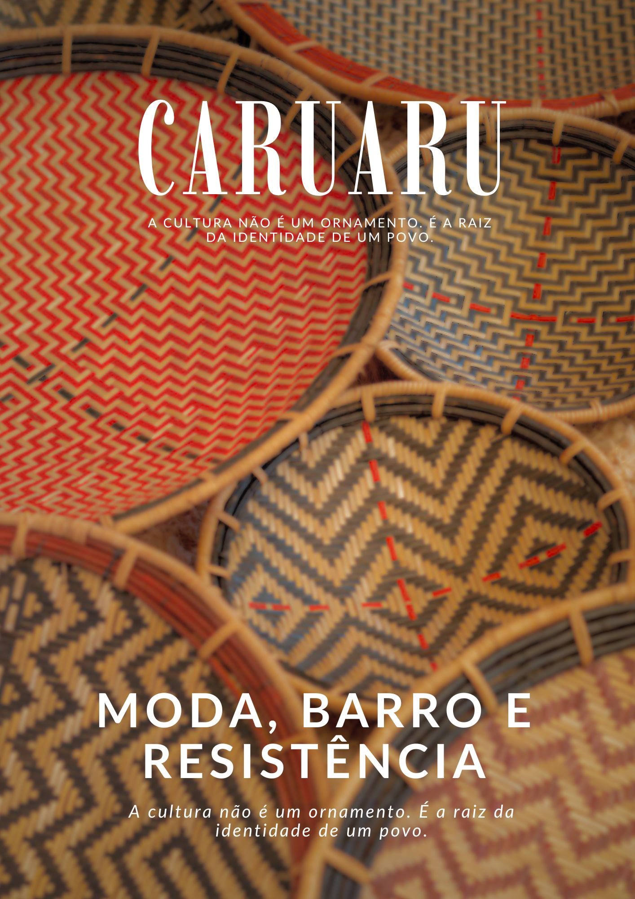

Denúncia & Resistência
Moda Brasileira:
Moda Brasileira:
Apropriação Cultural em Caruaru
Uma investigação sobre como a indústria do luxo lucra com a invisibilidade dos artesãos nordestinos, os verdadeiros detentores da técnica e originalidade.

A Economia da Invisibilidade
A disparidade brutal entre a valorização da estética e a realidade financeira.
Renda Média
R$ 1.650
Mensal por família artesã
73%
Informalidade
<1%
A Partilha Injusta
"A cultura não é um ornamento. É a raiz da identidade de um povo."— Artesãos de Caruaru
Acesse a Revista Completa
Um mergulho profundo no artesanato de barro, xilogravura e a história de Mestre Vitalino.
download Download PDF Revista